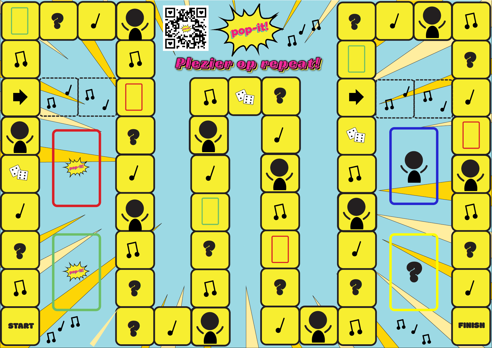

POP IT! Bordspel
POP IT! is een bordspel over popmuziek, met een popart stijl. Het draait allemaal om muziek en gezelligheid. Spelers beantwoorden vragen, vullen songteksten aan en proberen zo snel mogelijk het juiste nummer te raden.
Naast het bordspel is er ook een prototype van een app die het mogelijk maakt om de opdrachten makkelijk uit te voeren. Om het spel te promoten, is er een video gemaakt die precies laat zien hoe POP IT! werkt en wat de sfeer is. Dit project brengt mensen samen en maakt van elke speelavond een feestje!
Spelbord
